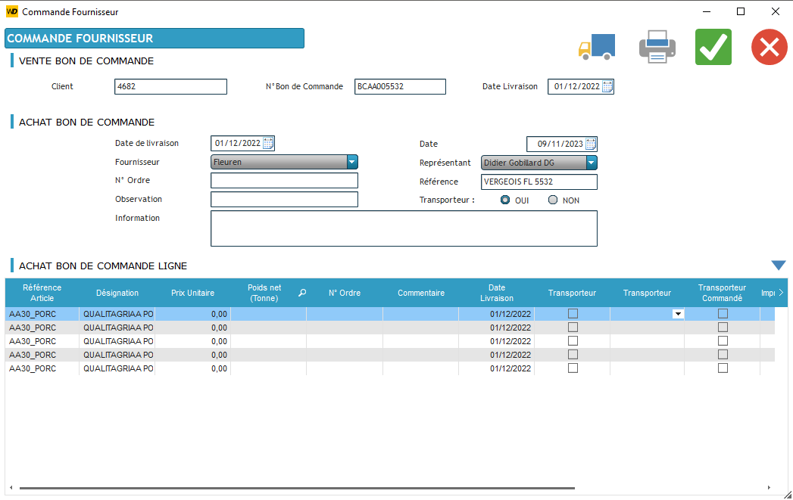
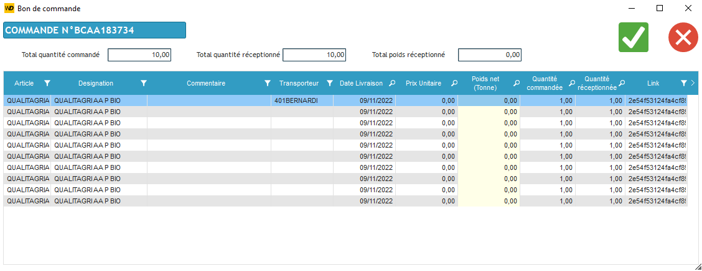
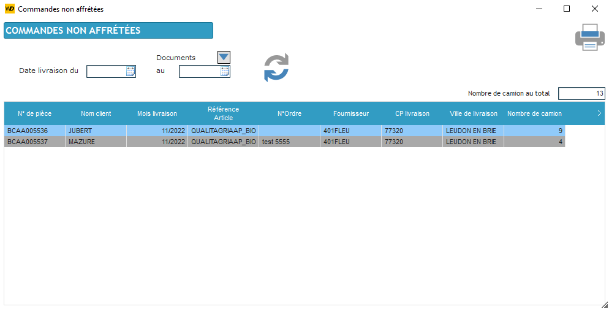
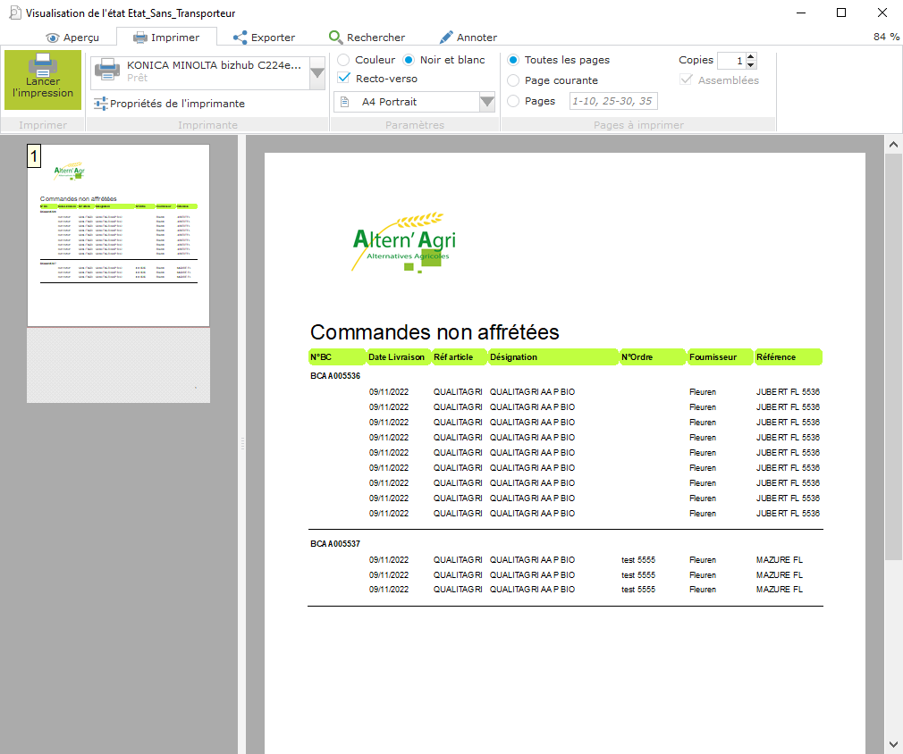

Basée à Courtisols, la société Altern'Agri est en activité depuis 18 ans. Elle est spécialisée dans le secteur d'activité des intermédiaires du commerce en matières premières agricoles.
L'objectif du projet est de centraliser l'information et éviter les saisies répétitives d'une même information. Le projet permet une fluidité entre les achats et les ventes, afin de ressortir plusieurs éléments :
Lorsque le client créer des bons de commande de vente on affiche cela dans un tableau et lorsqu'il sélectionne une ligne il peut créer : un bon de livraison, un bon d'achat et un bon de commande pour le transporteur :
Il complète le document en mettant dans la table le prix, le poids, le transporteur, etc...
Nous avons également de ce côté une liste des bon des commandes d'achat et lorsqu'on n'ouvre une ligne on peut accéder au détail du bon de commande d'achat :
Nous avons le détail du bon de commande avec la quantité commandé, la quantité réceptionné et le poids réceptionné, nous pouvons donc réceptionner la commande en saisissant le poids de chaque article réceptionné et lorsqu'on valide la quantité nous transformons ce dernier en facture.
En fonction du numéro de document et de la date la cliente peut afficher une liste des commandes non affrétées (la cliente n'est pas obliger de fournir un document ou une date) :
Elle peut imprimer la liste sous format papier :
Le client peut faire de même avec les marges sur la commande et les rapprochement entre les poids